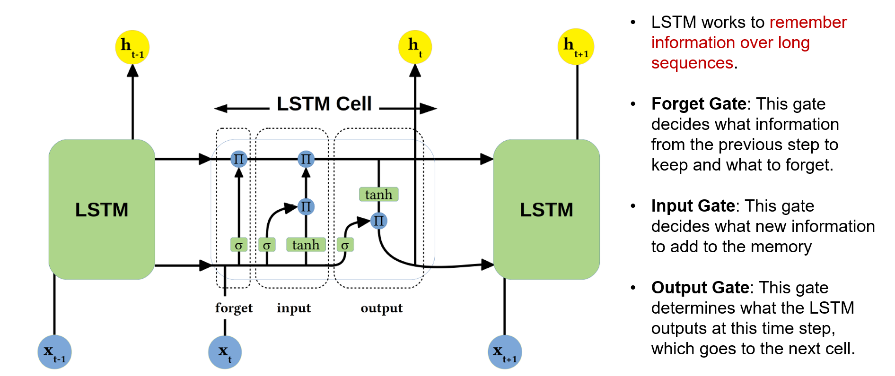

An LSTM helps manage information over time.
Long Short-Term Memory (LSTM) is a type of RNN. It uses a memory cell and gates to help control what is kept, added, and passed along.
Explore the diagram: select a number to see a short explanation.

1 · Forget gate
This gate controls how much of the previous cell state is kept. Think of it as adjusting the flow of older information.
Three gates help manage the memory.
The gates control how much information flows through the cell.
Forget gate: what should be kept?
This gate controls how much information from the previous cell state is retained and how much is reduced.
Input gate: what should be added?
This gate controls how much new information is added to the cell’s memory.
Output gate: what should be shared now?
This gate controls how much of the cell’s information contributes to the current output. Information can remain in the cell even when little of it is exposed at that step.
A reading example
At the beginning of a story, you learn that a student plans to visit New York to watch a Knicks game. After several sentences about packing and travel, that earlier plan still helps you understand why the student heads to a basketball arena.
An LSTM’s memory pathway and gates help it learn which earlier information remains useful as new information arrives.
Main idea: An LSTM manages information over time through gates that control what is retained, added, and exposed.
Where might you see LSTMs?
Examples include speech recognition, translation, language modeling, text generation, and time-series prediction.
LSTMs can help with longer sequences, but they do not remember everything perfectly. Next, we will look at how Transformers use attention to connect information across a sequence.